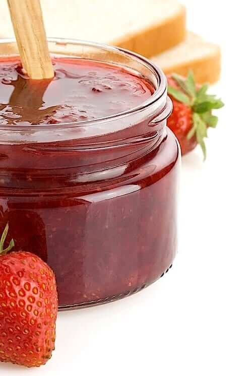

Easy Strawberry Jam

This crepe recipe is essential for sweet breakfasts or cozy date nights.
Here is a simple but delicious crepe batter which can be made in minutes.
It's made from ingredients that everyone has on hand.
Ingredients
Serving Size: 20 servings
- 1 pounds fresh strawberries, hulled
- 2 cups white sugar
- 2 tablespoons lemon juice
Steps
-
In a wide bowl, crush strawberries in batches until you have 4 cups of
mashed berry.
-
In a heavy bottomed saucepan, mix together the strawberries, sugar, and
lemon juice. Stir over low heat until the sugar is dissolved. Increase
heat to high, and bring the mixture to a full rolling boil. Boil,
stirring often, until the mixture reaches 220 degrees F (105 degrees C).
-
Transfer to hot sterile jars, leaving 1/4 to 1/2 inch headspace, and
seal. Process in a water bath. If the jam is going to be eaten right
away, don't bother with processing, and just refrigerate.
Nutrition Facts
Per Serving:
- 85 calories
- 0.2g protein
- 21.9g carbohydrates
- 0.1g fat
- 0.2mg sodium
Back to Home